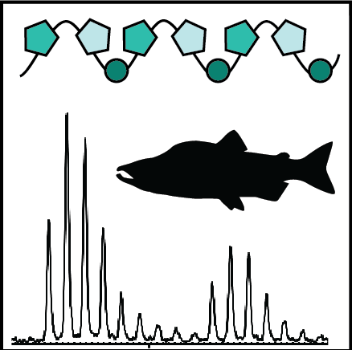

<p>
  The ZooMS Community is a group of researchers committed to developing resources for archaeological taxonomic identification using collagen peptide mass fingerprinting, also known as zooarchaeology by mass spectrometry (ZooMS).
</p>


